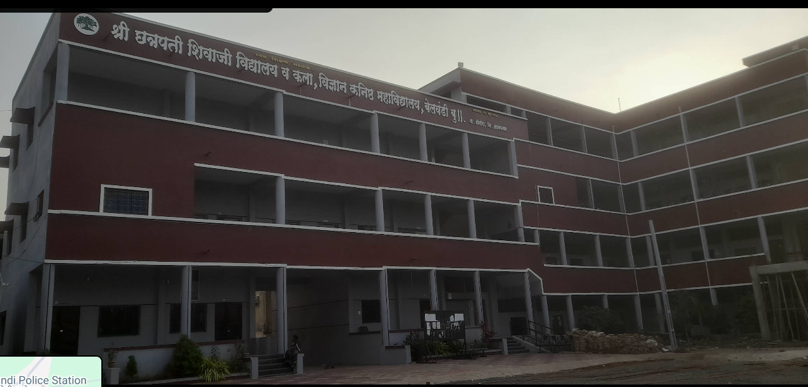
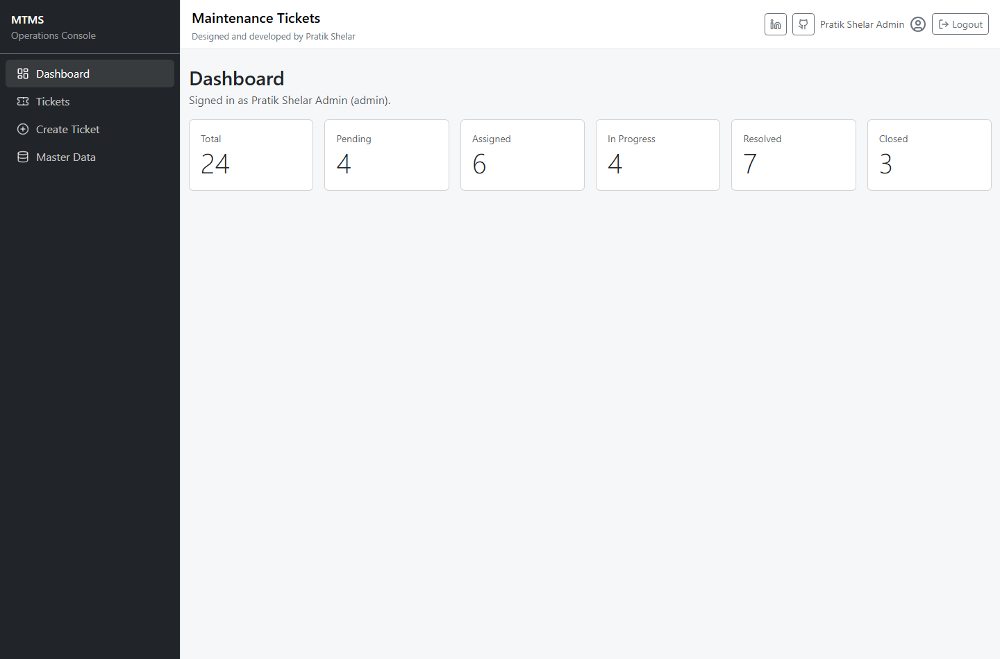
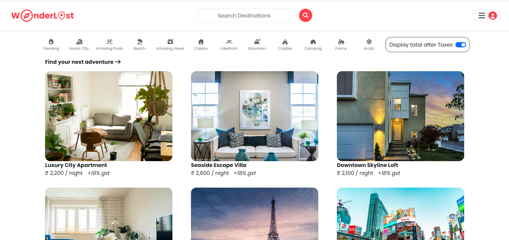
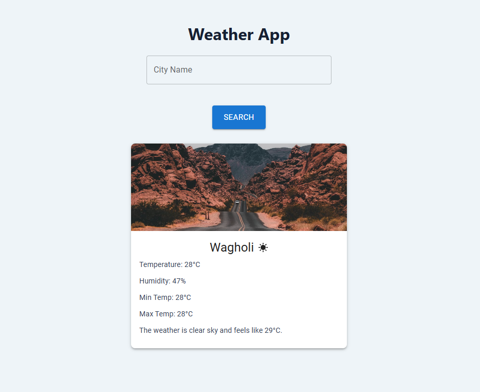
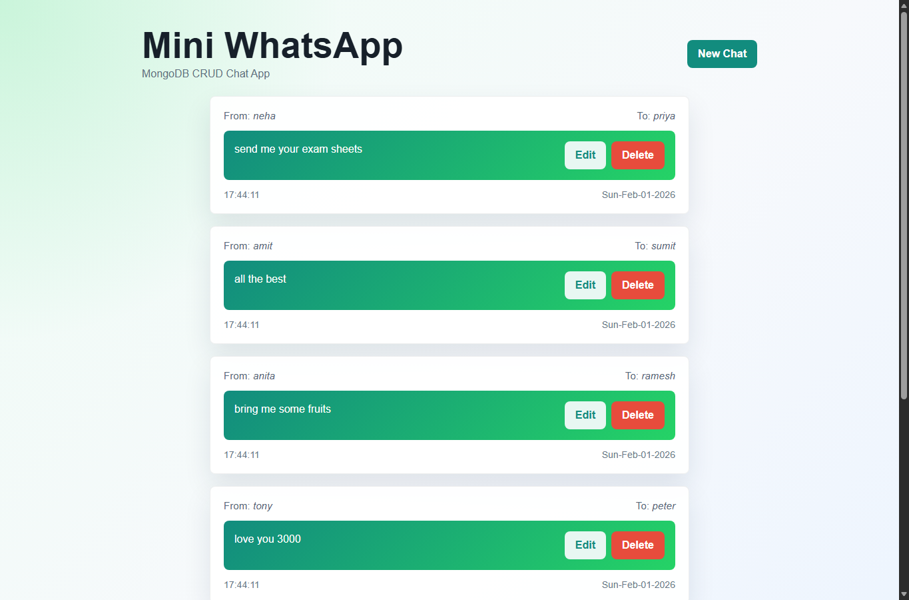
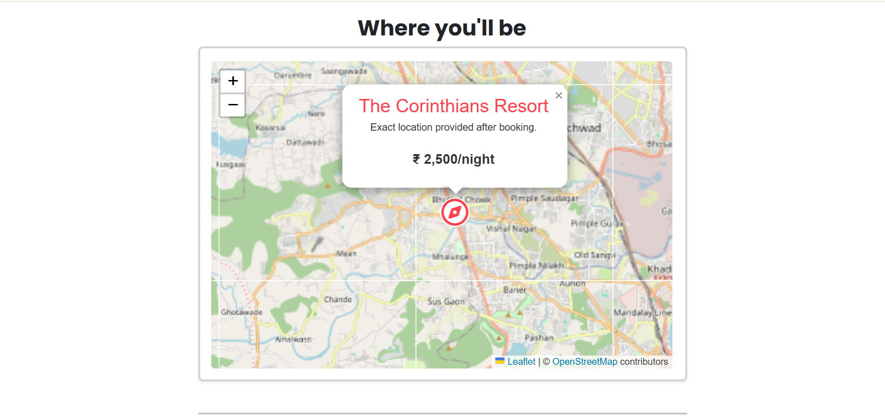

B.Tech CSE (Artificial Intelligence)
G.H. Raisoni College of Engineering and Management, Pune
VI Semester completed; entering final year. Current CGPA: 7.99/10.
Computer Engineering (AI) student
Frontend-focused MERN developer building responsive interfaces, REST APIs, authentication flows, and database-driven systems. I am looking for a web development or frontend internship where I can contribute clean UI, reliable code, and fast learning.
About me
Final-year CSE (AI) student building React interfaces, REST API workflows, authentication-based apps, and SQL/MongoDB-backed systems.
Final-year B.Tech CSE (Artificial Intelligence) student with a 7.99/10 CGPA and Web Developer Intern experience at Originedge Technology. I build responsive React interfaces, REST APIs, authentication flows, and database-driven MERN applications using MySQL, MongoDB, Prisma, and JWT.
Academic performance
Academic progress and supporting documents are organized for quick review alongside the developer profile.
B.Tech CSE (Artificial Intelligence)
VI Semester completed; entering final year. Current CGPA: 7.99/10.
11th & 12th HSC
Higher secondary education record included through local HSC score card PDF.
10th SSC
SSC academic foundation record included through the local score card folder.
Institution images and score card PDFs are linked below for quick review. Overall equivalent academic progress: 79.9% based on CGPA 7.99/10.
| Area | Level | Progress |
|---|---|---|
| Current CGPA | 7.99/10 | |
| Web Development | Strong | |
| Database Systems | Strong | |
| DSA Practice | 150+ Problems |

HSC College - 11th & 12thDevelopment journey
The portfolio combines internship tasks, structured training, GitHub projects, and steady C++ problem solving.
Working on React.js components, REST API integration, frontend debugging, Git/GitHub updates, and mentor feedback cycles.
Built responsive pages, React interfaces, Bootstrap layouts, reusable components, and Vite applications.
Created Express.js REST APIs with JWT authentication, validation, protected routes, and structured controllers.
Worked with MongoDB, Mongoose, MySQL, Prisma ORM, relationships, seed data, and CRUD operations.
Practiced project organization through routes, controllers, models, middleware, services, and utilities.
Solved 150+ problems using C++ across arrays, strings, recursion, searching, sorting, and logic building.
Experience
Current internship work adds real team workflow, code iteration, and production-style frontend practice to the project portfolio.
React.js, REST APIs, Git/GitHub
Develop reusable React.js components and responsive page sections, integrate REST APIs, resolve frontend bugs, test UI behavior across browser states, and maintain structured Git/GitHub updates from mentor feedback.
Achievements
Achievement content highlights DSA practice, GitHub activity, internship growth, and documented project work.
Solved using C++, improving problem-solving skills in arrays, strings, recursion, searching, sorting, and logic building.
Maintained public repositories across MERN stack, SQL, REST APIs, CRUD apps, frontend apps, games, and AI/computer vision basics.
Earned Quickdraw, Pull Shark, and YOLO achievements.
Built and documented projects across MERN stack, REST APIs, CRUD apps, and responsive frontend development.
Built production-style full-stack projects with authentication, CRUD, database models, and deployment practice.
Consistent C++ problem solving across arrays, strings, recursion, searching, sorting, and logic building.
Earned Quickdraw, Pull Shark, and YOLO achievements through active GitHub usage.
Project showcase
Each project includes stack, features, local screenshots, and repository/live links where available.

Role-based facility maintenance platform with Admin, Technician, and User dashboards, 10+ ticket workflows, JWT authentication, protected routes, Prisma schema design, and MySQL persistence.


Responsive weather dashboard with city search, loading/error states, dynamic visuals, live OpenWeather API data, and Material UI layout.

Server-rendered chat CRUD application with Express.js, MongoDB, Mongoose, EJS templates, method override, and responsive custom CSS.
Responsive currency converter with live exchange rates, country flags, swap feature, light/dark mode, and API error states.

Academic attendance system with face capture, recognition, student enrollment, Tkinter interface, and MySQL attendance records.
Certificates gallery
Click any certificate to open it in a lightbox.
Skills matrix
Skills are grouped around the resume target: frontend internships, MERN stack work, API integration, and C++ DSA practice.
Student blog
Concise developer notes that explain how I think about projects, practice, and continuous learning.
June 2026
I started with frontend basics, moved into backend routing and databases, and gradually connected both sides through full-stack projects.
This journey helped me understand how UI, APIs, validation, and databases work together in real applications.
June 2026
Real projects taught me authentication, protected routes, schema design, API testing, validation, uploads, deployment, and debugging discipline.
The biggest lesson was that clean structure matters as much as adding features.
June 2026
DSA improves structured thinking, while projects teach product flow, user experience, and practical engineering decisions.
Together, they build both interview confidence and practical engineering maturity.
Testimonials
A compact credibility section focused on learning consistency, project ownership, and team workflow.
Learning Signal
"Pratik shows steady improvement in software fundamentals and applies classroom concepts through practical development projects."
Internship Signal
"Internship tasks are helping him practice reusable components, API integration, debugging, and fast iteration from feedback."
Project Review
"His portfolio reflects initiative, documentation effort, and the ability to connect frontend, backend, and database workflows."
Collaboration Signal
"Pratik is comfortable discussing problems, debugging issues, and learning new tools needed to complete a feature."
Contact
Use the resume, email, GitHub, or LinkedIn links to review work and connect for internship opportunities.
Professional profile summary
I am a final-year Computer Engineering student specializing in AI, a Web Developer Intern at Originedge Technology, and a frontend-focused MERN developer. I build responsive interfaces, REST API workflows, authentication-based apps, and database-driven projects, with 150+ C++ DSA problems solved and 15+ GitHub repositories.